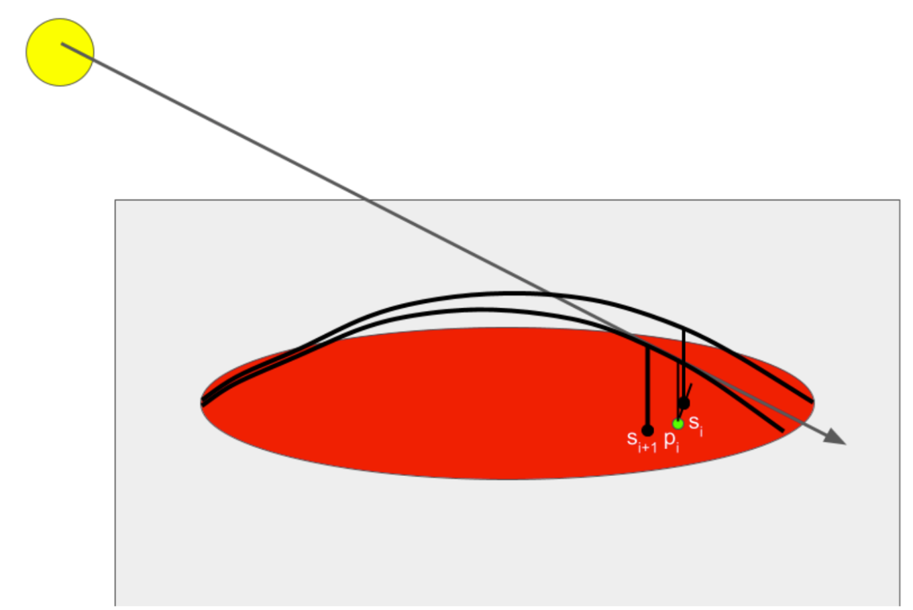
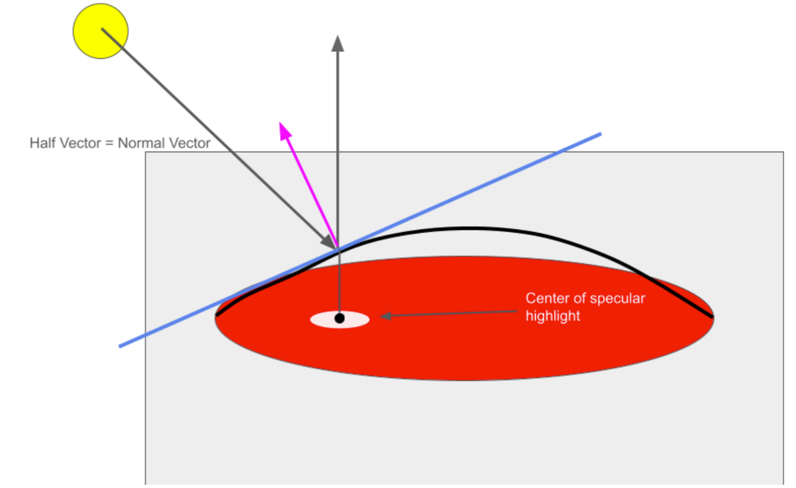

We have added a new tool to the Pencil2D drawing program to support semi-automated 2D cel shading for concave and convex shapes, half-tone shading, and specular highlights. The tool performs the shading process on a selected object with a user-defined light source.
Our approach is based on the paper "2D Shading for Cel Animation" by Hudon et al. (2018). We implemented the algorithm for semi-automated cel shading and self shadowing described in the paper. We also extended the algorithm to add halftone shading and specular highlights to further enhance the cel shading effect.
We make the following assumptions to use our semi-automatic shading algorithm - vector images (shapes drawn on the canvas) have a sinusoidal shape in the axis towards the light source. Additionally, we assume all vector images the user draws in the layer where they use our tool have a properly closed border (failure to do this can cause unexpected behavior)
At a high level - the shade contour can be determined by casting a ray through an arbitrary click point. We assume a sinusoidal shape of the vector image in the direction of the light source. Using this assumed sinusoidal shape, we can determine where the light ray intersects with the sinusoid above the click point and record a shade as the projection of that point onto the 2D canvas. However, one advantage of our algorithm is that it operates entirely in 2D space - with the only 3D point we record being the light source itself so we can raise or lower it with respect to the canvas. We assume the camera also is a positive and infinite Z distance away from the plane (so a normalized ray cast towards the camera would always be [0, 0, 1]). Once we have determined this shade point, we use the direction spawned by the closest shade point to create a search interval for another arbitrary point in the vector image. We then determine the shade point similarly along the sinusoid in the direction of the light source relative to that point, and continue this iteration in both directions until we exit the border of the vector image. We decrease the search interval if this happens so the edge of the contour is also smooth and converges with the edge of the vector image. Once we have determined the series of shade points, we add the ordered series of border intersections (the side of which changes depending on convexity/concavity), which we then draw a bezier curve through to determine the shade area. A visual of this process is below.
|  |
For a concave sinusoid can determine a shade point by casting a ray through the point p and determining the inclination angle of that ray, Θ, assuming the point is at z = 0. We can determine where the ray intersects with the vector image, which is defined by a bezier curve, with a pre-existing iterative algorithm. Once the near and far intersections, Nn and Nf are determined (Nn being closer to the light source), we can use theta to determine the proper distance vector for which to interpolate across the vector image in 2D space with the following equation: \(S_i = N_f + \cos(\theta)\frac{N_n - N_f}{2}\)
For a convex shape, we simply switch Nn and Nf, and use the list of Nn as the border points.
Modeling the sinusoid with \(y = d (\sin(\frac{x}{d}))\), where d is the distance between the near and far border points, we can determine the tangent equation to the sinusoid at any distance m across it to be \( y = cos(\frac{m}{d})(x-m)+dsin(\frac{m}{d}) \). Using this equation, we can determine the normal vector to the sinusoid and solve for m where this normal vector is equal to the half vector H between the ray cast on the sinusoid and the one pointing directly towards the camera. This half vector H is always equal to \(H = \frac{L + V}{||L+V||}\) where \(L = (cos(\theta{}), sin(\theta{}))\) and \(V = (0, 1)\). The determined point would be the center of the specular highlight, assuming the normal vector to the sinusoid does not vary across the axis orthogonal to the ray cast from the light source, when projected into 2D. As such, using the same iterative algorithm as the shade points allows us to determine the specular highlight line for an anisotropic microfacet BSDF. We move a certain distance in both directions from this line to determine the highlight, which increases for a more diffuse BSDF. For an isotropic specular highlight, we use the center of this shade line to also control the highlight in the other direction. A diagram of the half vector and normal vector is below:
Self shading is triggered by a user drag input, starting from the object that will cast a shadow and ending on the object that will receive the shadow. Each of the far neighbors as computed in the primary cel shading algorithm are projected in the direction away from the light by a distance determined by the length of the user drag. Projected points that lie in the shadow-receiving object make up the final shadow.
Halftone shading is triggered by the halftone checkbox and the utilisation of the cel shade tool. The halftone shade creates ellipses of a certain radius within the Bezier area previously determined. The methods for halftone shading iterate through the points of the region leaving a space of 6.0 or 4.0 depending on the size of the area. This number for spacing was determined to ensure a consistent pattern but also space out the ellipses enough to be seen in the GUI. The radius of the ellipse drawn is determined by the position of the point to the center of the area to be shaded. This variability in ellipses radii was created for a better visual effect. For the specular highlights, the radius increased closer to the center, while the opposite is true for the shaded regions.
We first considered implementing the same shade and light layers as the paper, which would render the light point as its own layer and the shadows on a different layer from the lineart. After they were implemented, we decided that it would actually be better to draw the shadow directly on the vector layer of the lineart, as this would also allow for interesting effects like layering shadows. We also had to edit the Pencil2D GUI to make the halftone shading togglable. Finally, we added sliders that allow the user to dynamically edit the light source through the application, instead of having to hard code it.
We encountered a lot of initial difficulty when figuring out how to implement convex shading. Translating a 3D light ray to a 2D set of points required complex calculations, not all of which were detailed in the paper that we were referencing. Additionally, after implementing the base algorithm, there were lots of different artifacts relating to shape continuity, intersections between the shadow and the shape border, intersections between multiple shadows, and more. These all had to be individually fixed.
Aside from the algorithm, we also faced difficulty when implementing graphic elements for our algorithm. Although it existed, we couldn't actually test it until we had a way to interact with the scene. This required us to wade through the code base and learn about using real-time signals from Qt, the framework that the GUI was based off of, to do things like create new layers, tools, and light positions.
We learned a lot about the 3D to 2D shadow creation algorithm. Although some things were more straightforward to implement from class, like specularity on our objects, we also had to implement some novel algorithms from the paper. We had a written description and some mathematical formulas to work off of, but that was it. Aside from the algorithm, one of the biggest things we had to learn was the Pencil2D code base. The code base is huge, and adding one feature can mean editing more than ten files. We also learned how to edit a GUI in Qt, including interactivity and custom UI elements.
Software: Pencil2D–developed in C++, using QT framework. Pencil2D is open source with a fairly active contributor base.
Paper Citation (LINK)
Hudon, Matis, et al. “2D Shading for Cel Animation.” Proceedings of the Joint Symposium on Computational Aesthetics and Sketch-Based Interfaces and Modeling and Non-Photorealistic Animation and Rendering, ACM, 2018, pp. 1–12, https://doi.org/10.1145/3229147.3229148.
Cel Shading Resources
Noah implemented the brunt of the algorithm for the light ray, convex points, and populating the shadow.
Ian implemented self shadowing and contributed to the primary cel-shading algorithm, as well as debugging and fixing artifacts.
Siyona implemented halftone shading.
Jay fixed visual artifacts and created GUI elements.